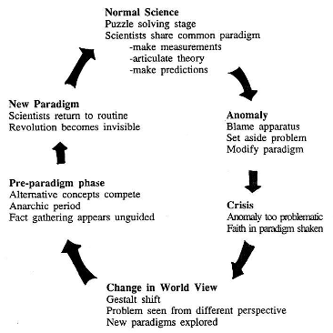

Happy Monday! Thank you very much for supporting the Daily Bulletin. If you want to provide any suggestions, feel free to fill this form. Please note that this is supplementary to The Week Ahead: please still check The Week Ahead for official information. By default, we will deliver a similar email to your inbox every day; if you no longer wish to receive this email anymore, please unsubscribe. Thank you!
周一快乐！感谢您支持每日公告。如果您想提出建议，请填写这个问卷。请注意，每日公告只是每周展望的补充，若想获得官方信息，请继续查阅每周展望。我们每天都会向您的收件箱投递一封类似的邮件；如果您不想继续接收每日公告，请取消订阅。谢谢！
Looking for some files related to Earth Science? They're here!
您是否在寻找一些与地球科学有关的文件？请看这里！
Community Time 午休时间
| Day | Y9 | Y10 | Y11 |
|---|---|---|---|
| Mon | Whole School Assembly (Gym) | ||
| Tue | Tutor Time | ||
| Wed | Tutor Time | Dean's Forum (Auditorium) | Tutor Time |
| Tue | Tutor Time | ||
| + | |||
Delicious Dinings 今日佳肴
| Day | Taste of Asia | Eat Global | Revolution | Morning Snack | ||||
|---|---|---|---|---|---|---|---|---|
| Mon | Qiang Pastry 火腿羌饼 |
Black Rice Bun 黑米馒头 |
Boiled Egg 白煮蛋 |
Eggs, Cheese and Ham Quesadillas 鸡蛋火腿芝士早餐饼 |
Oatmeal 麦片粥 |
Hash Browns 薯饼 |
— | Ham & Cheese Sandwich 火腿芝士三明治 |
| Tue | Pan-fried Beef Bun 牛肉煎饼 |
Dough Stick 油条 |
Steamed Egg 蒸鸡蛋 |
Fried Egg 煎鸡蛋 |
Roast Sweet Potato 烤红薯 |
Breakfast Sausage 猪肉早餐肠 |
Pork with Rice Noodles and Egg 鸡蛋猪肉丝炒河粉 |
Malazhan Cake 马拉盏 |
| Wed | Meat Bun 鲜肉包 |
Steamed Bun / Shandong Pancake 花卷 / 山东煎饼 |
Fried Egg with Pickles 外婆菜炒鸡蛋 |
Pan-fried Cowpeas 扒豇豆 |
Benedict Egg & Hollandaise Sauce 班尼迪克蛋配培根菠菜 & 荷兰酱 |
Lipu Taro 荔浦芋头 |
Celery and Pork Dumplings 芹菜猪肉饺子 |
Fried Pork Dumplings 猪肉煎饺 |
| Thu | Radish Pork Pastry 萝卜丝猪肉饼 |
Sticky Rice Cake 松糕 |
Stir-fried Egg 小葱炒鸡蛋 |
Mixed Beans 烩混合豆 |
Shakshuka 北非蛋 |
Prague Style Ham 布拉格风味火腿 |
Beef Fried Rice 上海酱油牛肉丝炒饭 |
Blueberry Muffins 蓝莓麦芬 |
| Fri | Shaomai 烧麦 |
Custard Bun / Stuffed Sticky Rice Ball 流沙包 / 粢饭团 |
Tea Egg 茶叶蛋 |
Roasted Mushroom 烤香菇 |
Baked Egg with Cheese Sausage on Toast 芝士香肠蔬菜吐司烘蛋 |
Baked Beans 茄汁焗豆 |
Pork and Preserved Vegetable Noodles & Bean Curd 雪菜肉丝面 & 素鸡 |
Shaomai 烧麦 |
| + | ||||||||
| Day | Taste of Asia | Eat Global | Revolution | Piccola Italia | Vegetarian | Afternoon Snack | ||
|---|---|---|---|---|---|---|---|---|
| Mon | Sweet and Sour Pork Strips 糖醋排条 |
Fried Shredded Chicken with Dried Bamboo Shoots 香干笋丝炒鸡丝 |
Chicken a la Portuguese 葡国鸡 |
Asparagus & Carrot 芦笋 & 胡萝卜 |
Fish Noodles 金汤鱼面 / 兰花干 |
Pasta with Classic (Pork) Sauce 猪肉酱拌意面 |
Okra and Bean Puree & Creamy Lentil 秋葵豆泥奶油扁豆 |
Apple Danish 苹果丹麦酥 |
| Tue | Xinjiang Chicken 新疆大盘鸡 |
Stir-fried Beef with Cumin 孜然小炒牛肉 |
Grilled Sole Fish with Fennel Sauce 扒龙利鱼柳配茴香汁 |
Sautéed Broccoli 西兰花 |
Xinjiang Hand-pulled Noodles with Pork 新疆拉条子 |
Beef Cannelloni 牛肉芝士卷 |
Fried Udon Noodle with Egg & Vegetables 鸡蛋炒乌冬面 |
Pork Tacos 墨西哥猪肉卷 |
| Wed | Spicy Chicken 红油椒麻棒棒鸡 |
Stewed Egg Cake 农家高汤火腿烩蛋饼 |
Romanian Roasted Duck Leg 罗马尼亚烤鸭腿 |
Roasted Baby Cabbage 烤娃娃菜 |
Barbecued Pork Noodles 叉烧面 / 荷包蛋 |
Pasta Shrimps with Cream of Mushroom 奶油蘑菇虾仁意面 |
Baked Cheese Zucchini with Z-Rou Stuffing and Roasted Pumpkin 植物肉节瓜船配烤南瓜 |
Butter Cake with Dried Fruit 英式果脯蛋糕 |
| Thu | Hot Braised Shrimp 元宝虾 |
Braised Bean Curd with Minced Pork 肉丝烧素鸡 |
Roast Pork Leg with Homemade Harissa 烤猪大腿配哈里萨辣酱 |
Grilled Zucchini 烤西葫芦 |
Braised Chicken Drumstick Noodles 红烧鸡腿面 / 虎皮蛋 |
Han Chesse Sandwich 火腿芝士三明治 |
Pan-fried Shredded Potato Cake 土豆丝饼 |
Ham & Cheese Croissant 火腿芝士羊角 |
| Fri | Yangzhou Pork Balls 扬州狮子头 |
Fried Egg with Tomato 西红柿炒蛋 |
Argentine Roast Beef 阿根廷烤牛肉 |
Mexican Baked Beans 墨西哥焗豆 |
Laksa 叻沙面 / 鹌鹑蛋 |
Chicken Enchiladas 墨西哥鸡肉卷 |
Vegetarian Huevos Rancheros 墨西哥红豆泥卷 |
Donuts 甜甜圈 |
| + | ||||||||
| Day | Taste of Asia | Eat Global | Revolution | Piccola Italia | Vegetarian | Evening Snack | ||
|---|---|---|---|---|---|---|---|---|
| Mon | Shanghai Braised Chicken 白斩鸡 |
Fried Sliced Pork with Yam and Fungus 山药木耳炒猪肉片 |
Pork Stew 慢炖猪肉 |
Fried Cowpeas 扒豇豆 |
Rice Noodle with Nanjing Duck 老鸭粉丝 / 油豆腐 |
Baked Pasta with Ham and Tomato Sauce 焗芝士意面配火腿番茄酱 |
Celery and Shredded Bean Curd with Black Rice 芹菜炒素肉丝配黑米饭 |
Fruit & Fruit Yogurt 水果 & 果味酸奶 |
| Tue | Oil Gluten Stuffed with Pork 油面筋塞肉 |
Fried Eggplant, Potatoes and Green Pepper with Chicken 鸡片炒地山鲜 |
Roasted Lamb with Garlic 中东烤羊腿 |
Baked Cauliflower with Cheese 芝士焗花菜 |
Noodles with Stir-fried Shredded Chicken and Water Bamboo 茭白鸡丝面 |
Hawaii Pizza 夏威夷披萨 |
Vegetarian Lasagna 蔬菜株肉千层面 |
Fruit & Yogurt 水果 & 酸奶 |
| Wed | Fried Shrimps with Fishman Style 避风塘炒虾 |
Fried Pork with Corn and Bell Pepper 五彩黄金猪肉丁 |
Fragrant Roast Spring Chicken 香烤春鸡 |
Grilled Eggplant 烤茄子 |
Noodles with Braised Beef 红烧牛肉面 / 兰花干 |
Fried Pasta with Sausage 炒意面配香肠 |
Sweet and Sour Lotus Root and Mixed Grains 糖醋藕夹配杂粮饭 |
Fruit & Chocolate Soy Milk 水果 & 巧克力豆奶 |
| Thu | Xiangxi Braised Duck 湘西土匪鸭 |
Stewed Tofu with Ham, Fungus, Water Bamboo Shoot 三鲜火腿家常豆腐 |
Mediterranean Style Fish 地中海风味鱼排 |
Cabbage 卷心菜 |
Noodles with Stewed Pork 红烧大肉干拌面 / 卤干 |
Chicken Hamburger 鸡肉汉堡 |
Fried Mixed Mushrooms with Couscous 香炒混合蘑菇配中东小米 |
Fruit & Yogurt 水果 & 酸奶 |
| + | ||||||||
Daily Inspiration 每日灵感
Quote of the Day 每日引言
This is a disaster. Look at the air, listen to the buzzing of the sun, the same as yesterday and the day before. Today is Monday too.
— José Arcadio Buendía
Excerpt from A Hundred Years of Solitude by Gabriel García Márquez. Shared by Albert Tan.
选自加西亚·马尔克斯《百年孤独》。由 Albert Tan 分享。
Shared Files of the Day 每日文件分享
Earth Science
Albert Tan · iCloud Drive
Philosophy of the Day 每日哲学
On June 17th in history, in 1996, the philosopher Thomas Kuhn died. He was an American philosopher of science. In his book "The Structure of Scientific Revolutions," he introduced the term "paradigm shift," which has since become an English-language idiom.
Paradigm shift describes how people or society change their fundamental beliefs.
Examples of paradigm shifts include the shift from the Ptolemaic geocentric model to the Copernican heliocentric model of the solar system.
Shared by Jerry Ying from Polemia.
由 Polemia 的应浚颉分享。
Shared Files of the Day 每日文件分享
Earth Science
Albert Tan · iCloud Drive
On This Day 以史为鉴
June 17: King's Official Birthday in the United Kingdom (2023)
6月17日：防治荒漠化和干旱世界日、冰岛独立日（1944年）
- 653 – Pope Martin I was arrested in the Lateran Palace, Rome, and taken to Constantinople.
- 1631 – Mumtaz Mahal, wife of the Mughal emperor Shah Jahan, died in childbirth; Jahan spent the next seventeen years constructing her mausoleum, the Taj Mahal.
- 1913 – In Detroit, autoworkers for car manufacturer Studebaker went on strike in the American auto industry's first major strike action.
- 1963 – Riots broke out in Saigon one day after the signing of the Joint Communiqué, an attempt to resolve the Buddhist crisis in South Vietnam.
- 2017 – Wildfires erupted across central Portugal, eventually causing the deaths of 66 people.
- 1462年 – 瓦拉几亚大公弗拉德三世率领军队夜袭奥斯曼帝国军营，试图刺杀其皇帝穆罕默德二世。
- 1885年 – 由法国雕塑家弗雷德里克·巴托尔迪创作的作品自由女神像自法国运抵美国纽约。
- 1944年 – 冰岛王国宣布结束丹麦国王克里斯蒂安十世的法理统治，并建立冰岛共和国。
- 1953年 – 冷战对东德经济的压力造成东柏林爆发反共运动，遭到苏军驻德集群与德国人民警察镇压。
- 1972年 – 美国共和党人员潜入华盛顿哥伦比亚特区水门综合大厦的民主党办公室时被捕，水门事件爆发。
Births and Deaths: Bolesław I the Brave (d. 1025); J. H. Hobart Ward (b. 1823); Carmen Casco de Lara Castro (b. 1918); Ankita Bhakat (b. 1998)
Fetched from Wikipedia.
选自维基百科。
In the News 时事要闻
- A fire in a residential building in Kuwait City's suburb of Mangaf kills at least fifty people.
- A plane crash near Chikangawa, Malawi, kills nine people, including Vice President Saulos Chilima.
- In tennis, Iga Świątek wins the women's singles and Carlos Alcaraz wins the men's singles titles at the French Open.
- In the Indian general election, the National Democratic Alliance, led by Prime Minister Narendra Modi, is re-elected with a reduced majority.
- 新弗拉芒联盟在比利时众议院选举中取得最多席次。
- 伊加·斯维亚特克及卡洛斯·阿尔卡拉斯分别获得法国网球公开赛女子单打及男子单打比赛冠军。
- 欧洲议会选举结束，欧洲人民党党团取得最多席次。
- 以色列发动努塞拉特行动，自加沙地带努塞拉特难民营救出4名哈马斯人质。
- 波音星际航线首次载人任务成功发射，并与国际空间站对接。
Ongoing: Israel–Hamas war; Russian invasion of Ukraine; Sudanese civil war
Recent deaths: Matija Sarkic; Neil Goldschmidt; Majed Abu Maraheel; Robert Hughes; Lynn Conway; David Boaz
正在发生：俄罗斯入侵乌克兰；以哈战争；红海危机
最近逝世：尼尔·戈尔德施密特；杰里·韦斯特；王永志；爱德华·C·斯通；威廉·安德斯
Fetched from Wikipedia.
选自维基百科。